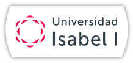

Herramientas
Elegir pocas, con función clara.

Mi EPA digital Beta demostrativa complementaria2.º de ESO · Tecnología y Digitalización · Navarra
Mi EPA digital es una beta muy ligera: una demo navegable para mostrar cómo el alumnado puede organizar su aprendizaje digital con más claridad, autonomía y criterio.
Elegir pocas, con función clara.
Carpetas y nombres que se entienden.
Guardar, etiquetar y recuperar mejor.
Uso digital responsable y sostenible.
Qué es un EPA/PLE
Según la lógica del proyecto, el EPA ayuda a que el alumnado haga visibles sus herramientas, sus rutinas y sus decisiones: qué usa, para qué lo usa, dónde guarda, cómo colabora y qué necesita mejorar.
Encontrar información útil y distinguir mejor qué merece guardarse.
Ordenar archivos, tareas y materiales para no depender del caos.
Transformar la información en esquemas, presentaciones o evidencias propias.
Incorporar seguridad, bienestar digital y reflexión sobre hábitos de uso.
Demo principal
Un entorno sencillo, con pocas herramientas, archivos ordenados y criterios básicos de seguridad y bienestar.
Ya sé dónde guardar mis tareas, pero todavía tengo que mejorar cómo nombro archivos y cómo filtro la información.
Canvas
Las mínimas necesarias para buscar, organizar, crear y compartir.
Carpetas claras, nombres comprensibles y separación por materias o proyectos.
Seleccionar, etiquetar y recuperar recursos sin acumular enlaces sin sentido.
Privacidad, huella digital, bienestar y uso responsable de la tecnología.
Sobre el proyecto
Esta web acompaña la presentación del proyecto y ayuda a visualizarlo mejor, pero el recurso pedagógico principal sigue siendo el Genially evaluable. La demo busca claridad, no complejidad.
El concepto de EPA digital del alumnado de una forma rápida, visual y fácil de probar.
No es una plataforma real, ni una app completa, ni una herramienta imprescindible para aplicar el proyecto.
Un apoyo visual elegante para enlazar desde Genially, mostrar en una presentación o publicar en GitHub Pages.